400 mil anys de pòdcast
Una història personal
00. la vora del foc
01. un oient
02. el dial global
Josep M. Ganyet
mortensen.cat
sørensen.ai
upf.edu
ub.edu
cavallfort.cat
ràdio i pòdcast · 01
00. la vora del foc
01. un oient
02. el dial global
una història personal.
granollers, 20/11/2026 · 02
00. la vora del foc
01. un oient
02. el dial global
00
la vora del foc
01
un oient
02
el dial global
índex · 03
00. la vora del foc
01. un oient
02. el dial global
00
04
00. la vora del foc
01. un oient
02. el dial global
La revolució més gran
de la humanitat
no és la IA.
Llum, escalfor, seguretat, aliment. I temps.
el foc · 05
00. la vora del foc
01. un oient
02. el dial global
A la vora del foc,
algú va explicar un conte.
Amb l'audiència de la majoria de pòdcasts.
el primer podcàster · 06
00. la vora del foc
01. un oient
02. el dial global
fa uns 40.000 anys · altamira
40 mil
anys: les primeres pintures a les coves d'Altamira.
Beeches Pit (Anglaterra) i Schöningen (Alemanya) · Roebroeks i Villa, PNAS, 2011
fa 400.000 anys · 07
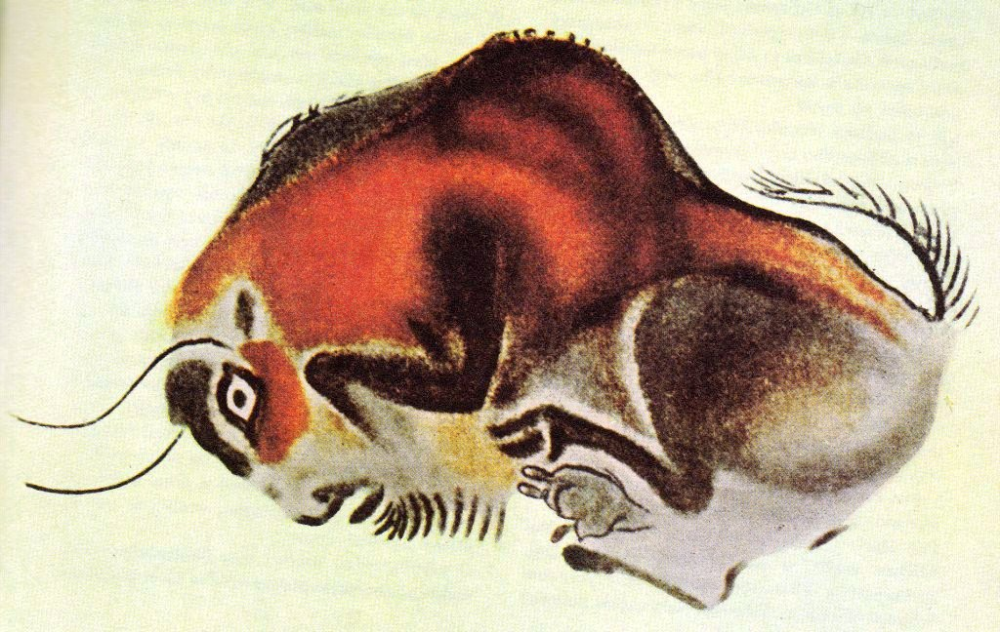
Bisons d'Altamira, fa uns 15.000 anys, pintats sobre el relleu de la roca
00. la vora del foc
01. un oient
02. el dial global
Els aedes de l'antiguitat
Anaven poble per poble
el download
Hi posaven l'èpica
el coneixement
Qui pagava, descendent dels déus
el patrocini
Diverses nits seguides
l'episodi
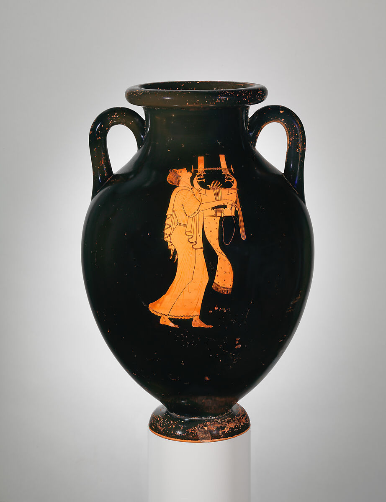
Pintor de Berlín, àmfora àtica, c. 490 aC. The Metropolitan Museum of Art, Fletcher Fund, 1956 (56.171.38).
els aedes · 09
00. la vora del foc
01. un oient
02. el dial global
balcans, anys 30 · parry i lord
Lo Canalero, l'Homer de l'Ebre.
Milman Parry i Albert Lord descobreixen als anys 30 que les tècniques homèriques eren ben vives als Balcans: el cantor improvisa amb fórmules, com els aedes.
Bertsolaris · glosadors · la jota de l'Ebre · el freestyle
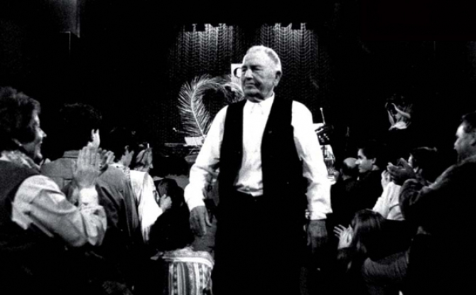
Homenatge al cantador de jotes Josep Garcia «Canalero» al Tradicionàrius de 1996. Foto: Arxiu CAT.
parry i lord · 10
00. la vora del foc
01. un oient
02. el dial global
01
11
00. la vora del foc
01. un oient
02. el dial global
tàrrega, 1982 · radiocadena española· COPE · SER · municipals · Ràdio Arrels
El fil diari.
Jordi Vendrell
formular
Llorenç Torrado
picat
Oleguer Sarsanedas
càpsula
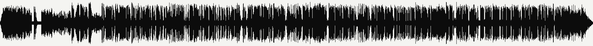
Àudio: Arxiu Sonor de la Ràdio a Catalunya (UAB)
tàrrega, anys 80 · 12
00. la vora del foc
01. un oient
02. el dial global
tàrrega, anys 80 · ona curta
El món, des de l'habitació.
Ona curta: la BBC per aprendre anglès, Ràdio Moscou (en català, del 1988 al 1991), Ràdio Canadà Internacional, Ràdio Pyongyang.
sony icf-7600a, primers 80
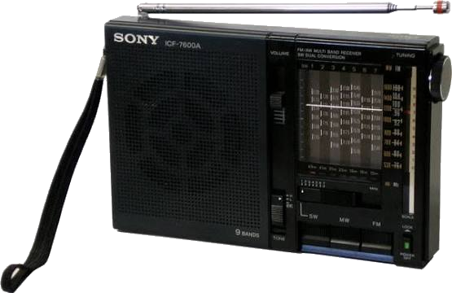
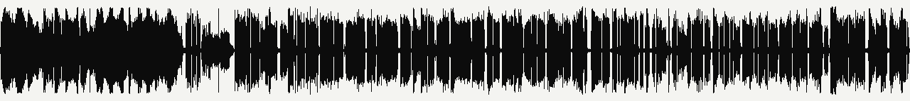
Àudio: Arxiu Sonor de la Ràdio a Catalunya (UAB)
ona curta · 13
00. la vora del foc
01. un oient
02. el dial global
catalunya ràdio, 1984 · el diumenge
Catalunya DX.
Catalunya Ràdio, el diumenge. Un Miquel Calçada de 18 anys.
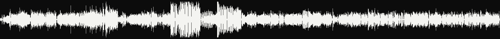
Des del 19/2/1984 · Arxiu Sonor de la Ràdio a Catalunya, UAB
catalunya dx · 14
00. la vora del foc
01. un oient
02. el dial global
ibm, anys 90 · pasta gansa + el terrat
Una planta sencera programant en silenci,
i rient alhora.
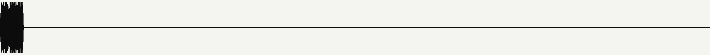
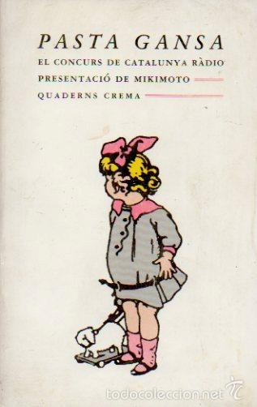
ibm, anys 90 · 15
00. la vora del foc
01. un oient
02. el dial global
morèlia, 2004 · l'internauta
L'Internauta, a l'iPod.
El programa 500 de Minoria Absoluta, l'arxiu de la segona hora que xafa la primera, i un correu al Sallent.
ipod: pipp345, cc by-sa 4.0
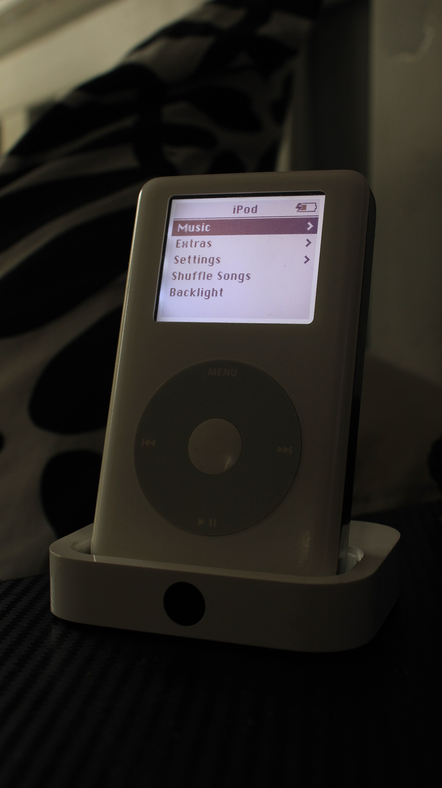
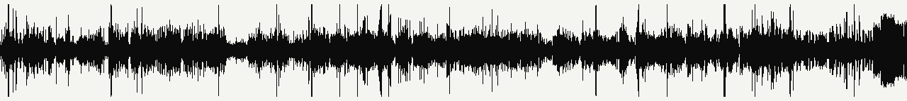
morèlia · 16
00. la vora del foc
01. un oient
02. el dial global
the guardian, 12 de febrer de 2004 · ben hammersley
«Audioblogging? Podcasting? GuerillaMedia?»
El nom, de passada, en un article sobre la ràdio d'aficionats a internet.
2004 · 17
00. la vora del foc
01. un oient
02. el dial global
02
18
00. la vora del foc
01. un oient
02. el dial global
termcat · tecnologies de la informació i la comunicació
pòdcast
Emissió d'àudio o audiovisual emmagatzemada a internet com a arxiu digital, sovint formant part d'una sèrie, que l'usuari pot reproduir en qualsevol moment, sigui en línia o, un cop descarregada a l'ordinador o en un dispositiu mòbil, fora de línia.
El primer diccionari: New Oxford American Dictionary, paraula de l'any 2005. En català: Termcat i Gran diccionari de la llengua catalana; el DIEC encara no.
pòdcast · 19
00. la vora del foc
01. un oient
02. el dial global
2001–2005 · els agregadors
Les primeres passes.
2001
Dave Winer afegeix l'«enclosure» a l'RSS i hi penja una cançó dels Grateful Dead.
2003
Radio UserLand ja baixa l'àudio dels canals. Christopher Lydon hi publica les primeres entrevistes.
2004
iPodder, d'Adam Curry: de l'RSS a l'iPod sense tocar res. Neix el Daily Source Code.
2005
iTunes 4.9: el directori de pòdcasts arrenca amb més de 3.000 programes.
els agregadors · 20
00. la vora del foc
01. un oient
02. el dial global
28 de juny de 2005 · itunes 4.9
El pòdcast entra a l'iTunes.
L'iTunes 4.9 porta un directori amb més de 3.000 pòdcasts gratuïts: ABC News, BBC, Disney, ESPN, NPR… i Adam Curry. Subscriure-s'hi és un clic.
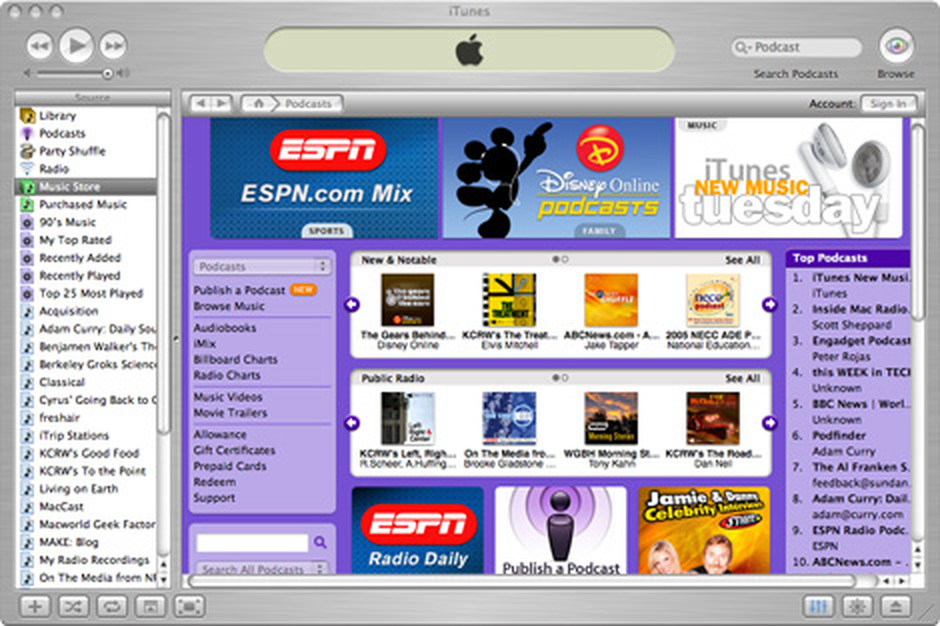
captura: macworld
itunes 4.9 · 21
00. la vora del foc
01. un oient
02. el dial global
2004–2009
Els primers èxits.
2004
Daily Source Code
Adam Curry, «el Podfather», explica cada dia com es fa un pòdcast.
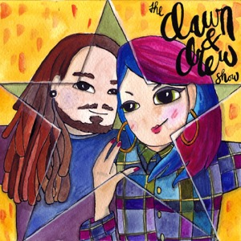
2004
The Dawn and Drew Show
Una parella des d'una granja de Wisconsin: dels més escoltats del 2005.
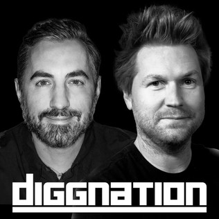
2005
Diggnation
Kevin Rose i Alex Albrecht, en vídeo, al sofà i amb cerveses.
2005
The Ricky Gervais Show
Rècord Guinness: 261.670 descàrregues per episodi el primer mes.
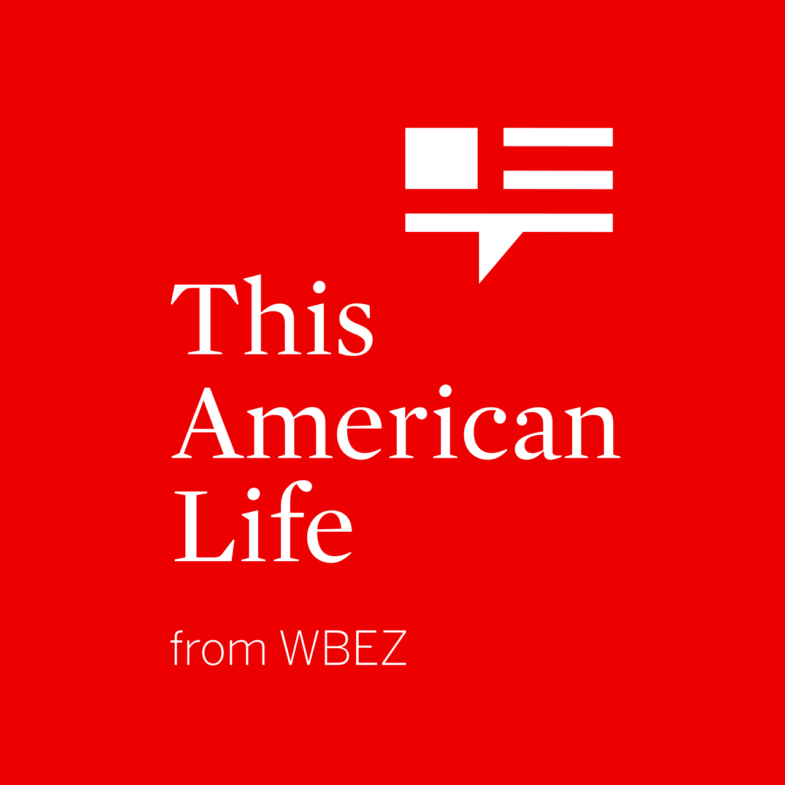
2006
This American Life
De la ràdio pública al número u de l'iTunes.
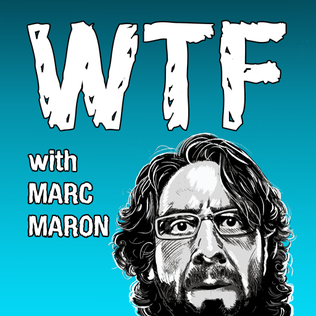
2009
WTF with Marc Maron
L'entrevista llarga i sense pressa, convertida en gènere.
els primers èxits · 22
00. la vora del foc
01. un oient
02. el dial global
2004–2009
En català, també.
pofHQ
2004 · Pau Oliva
L'Internauta
2005 · Vicent Partal, Catalunya Ràdio
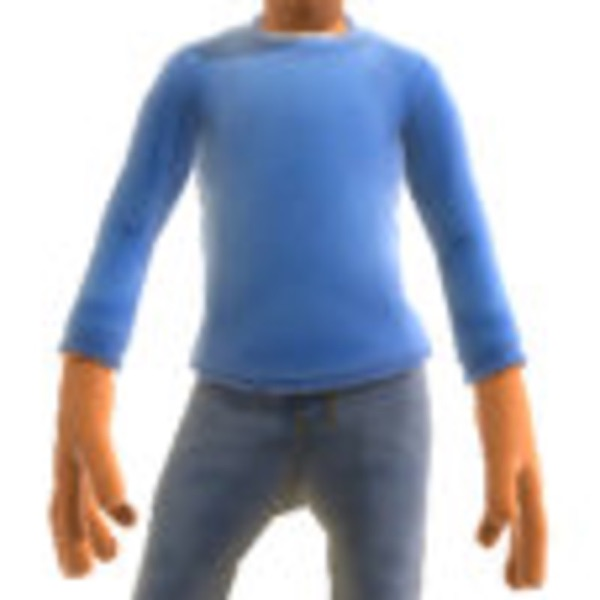
El podcast de l'Albert Murillo
2006 · Albert Murillo
Paraules en podcast
2006 · Josep Lluís Silva
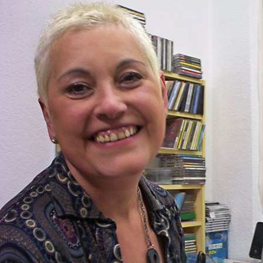
Nena en català
2006 · Nena
Connectant els punts
2007 · Toni Sellas
mossegalapoma
2007 · Tomàs Manzanares i Marc Alier
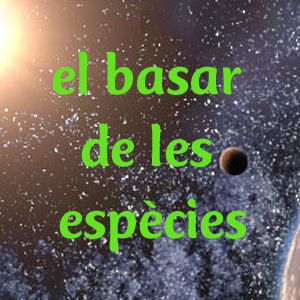
El basar de les espècies
2007 · Jaume Llambrich
La competència
2009 · Òscar Andreu i Òscar Dalmau, RAC1
en català · 23
00. la vora del foc
01. un oient
02. el dial global
Engegues el cotxe,
i s'engega la ràdio a l'emissora on la vas deixar.
el punt de trencament · 24
00. la vora del foc
01. un oient
02. el dial global
Engegues el cotxe,
i s'engega el pòdcast en el punt on el vas deixar.
Com sempre s'havia engegat la ràdio.
el punt de trencament · 24
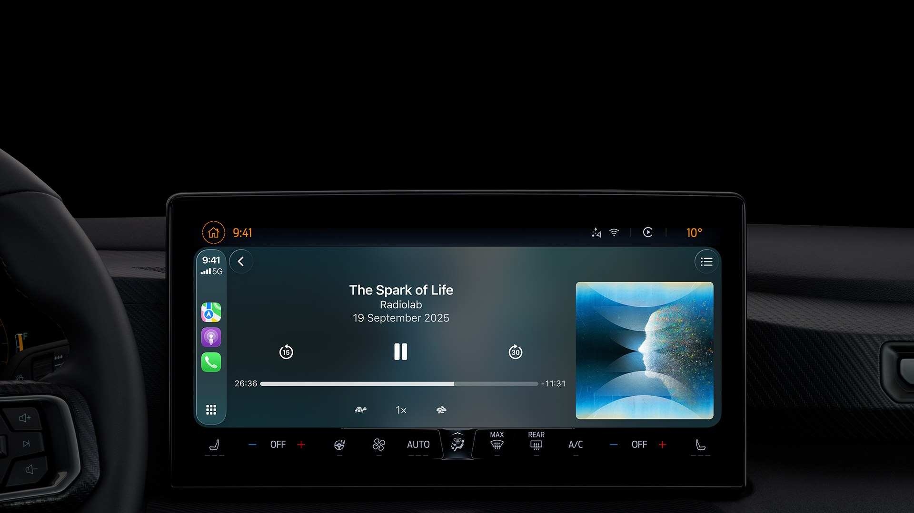
00. la vora del foc
01. un oient
02. el dial global
carplay · apple podcasts
Imatge: Apple
al cotxe · 25
00. la vora del foc
01. un oient
02. el dial global
de l'aldea global
mcluhan · 26
00. la vora del foc
01. un oient
02. el dial global
diner, 2021 · el podcast és la resposta
Tres preguntes.
El directe
què passa?
La ràdio a la carta
què m'he perdut?
El pòdcast
què puc aprendre?
tres preguntes · 27
00. la vora del foc
01. un oient
02. el dial global
ara · els que escolto
Entretenir.
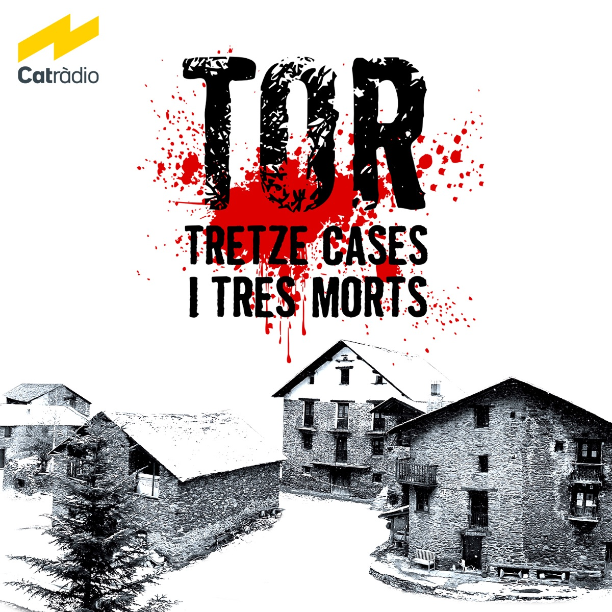
Tor, tretze cases i tres morts
Carles Porta · Catalunya Ràdio
La Sotana
Juanola, Vidal, Díaz i Garcia
The Wild Project
Jordi Wild
ara · 28
00. la vora del foc
01. un oient
02. el dial global
el dial global · l'espai i el temps
Aprendre.
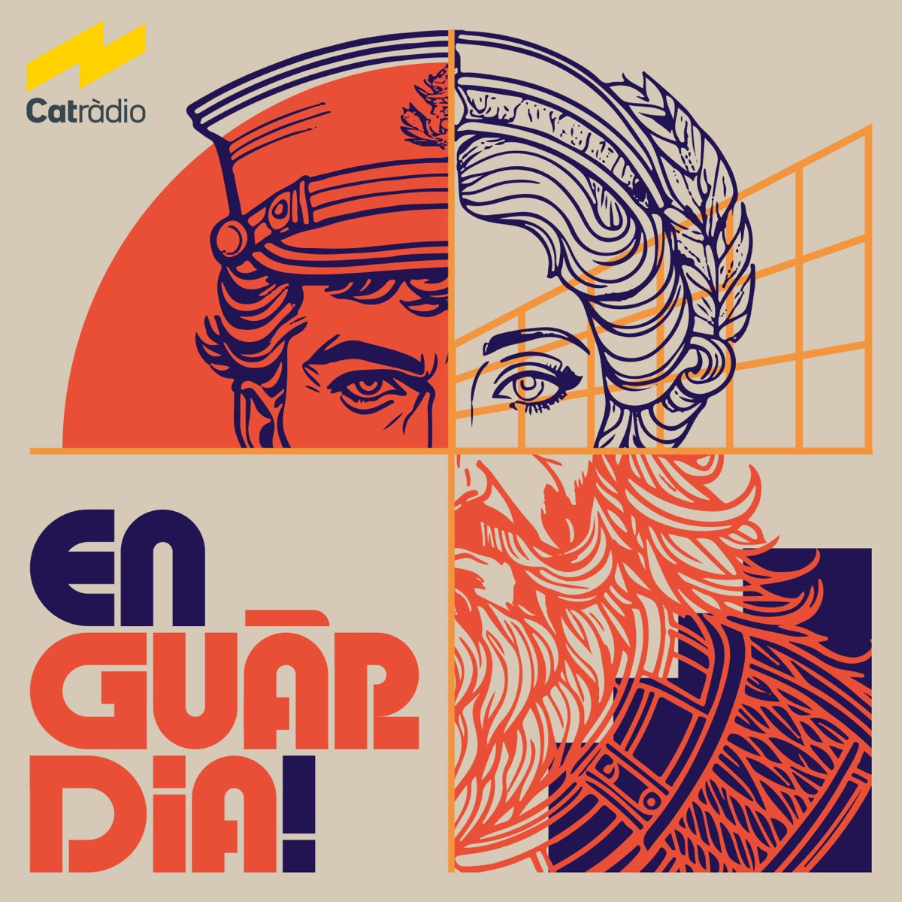
En guàrdia!
Enric Calpena · Catalunya Ràdio
The History of English Podcast
Kevin Stroud
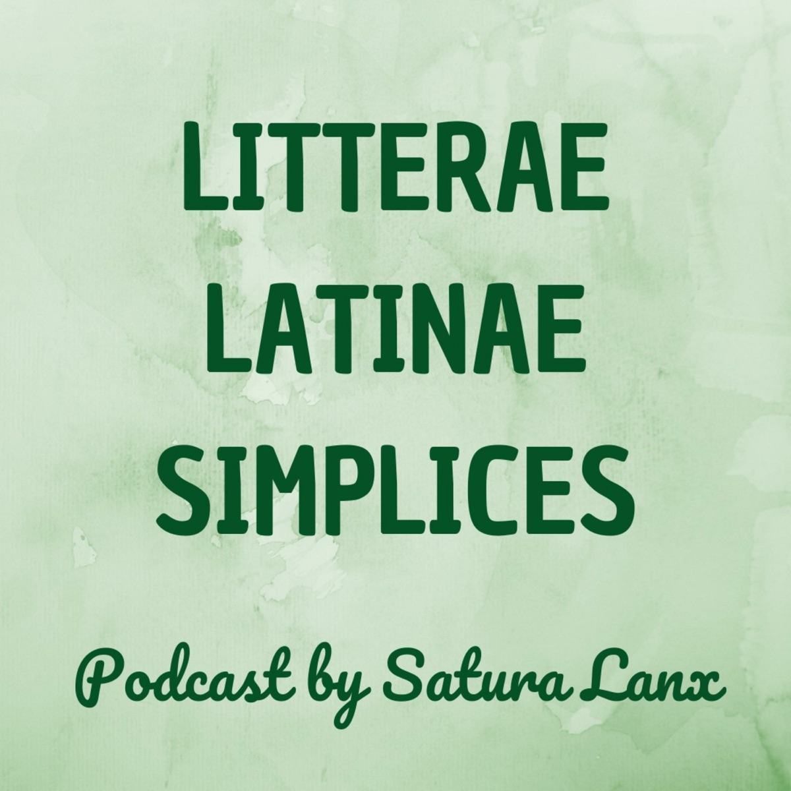
Litterae Latinae Simplices
Irene Regini · Satura Lanx
aprendre · 29
00. la vora del foc
01. un oient
02. el dial global
2026 · fora de les grans ràdios
Independents en català.
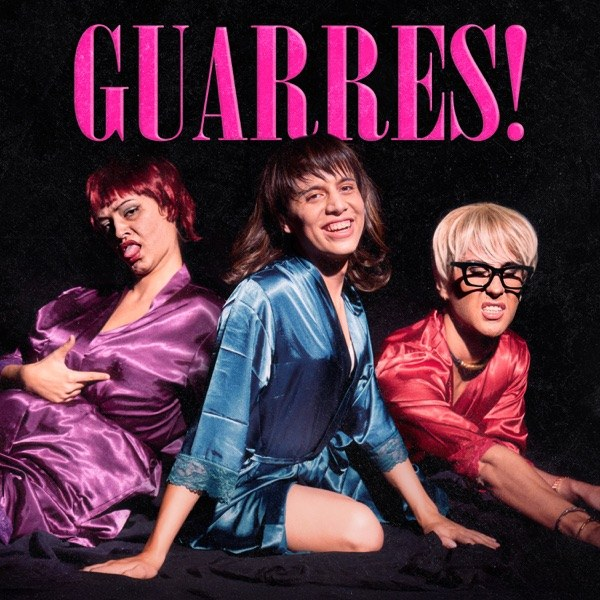
Guarres!
Gina Bashina, Luz Phallus i Consol Adó
Xapa La Ràdio
Pep Gascon, Marc Ventura i Mario Rodríguez
La Riota
Carles Capella, Marc Llibre i Àlex Agudo
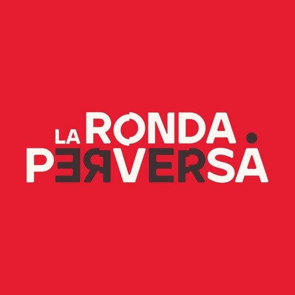
La ronda perversa
David Balaguer · Radiofònics
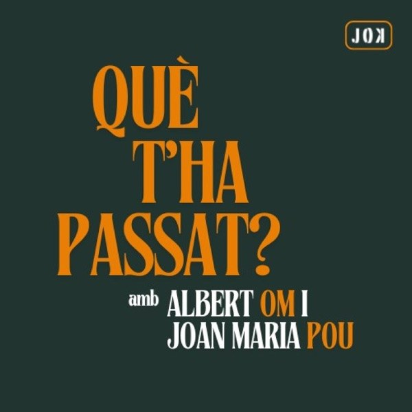
Què t'ha passat?
Albert Om i Joan Maria Pou · JOK
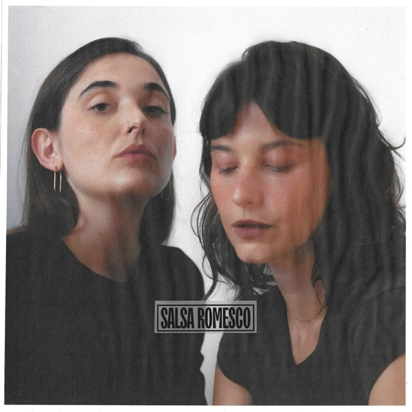
Salsa Romesco
Marta Mas i Queralt Guinart · Radio Primavera Sound
ara · 30
00. la vora del foc
01. un oient
02. el dial global
2026 · audio.cat
Episodis en català, cada dia.
de l'1 de gener al 18 de novembre · 6.256 episodis, 359 pòdcasts
Font: audio.cat
ara · 31
00. la vora del foc
01. un oient
02. el dial global
dissabte 14 de novembre · en guàrdia!, capítol 1315
Ha passat una generació,
i la nova també escolta pòdcasts.
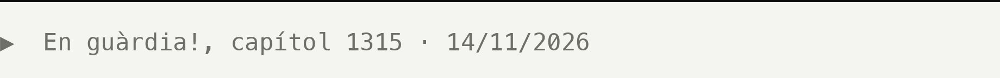
en guàrdia · 32
00. la vora del foc
01. un oient
02. el dial global
morèlia, 2004 · barcelona, 2026
De Morèlia a En guàrdia.
A Morèlia em vaig sentir sense saber-ho.
La setmana passada va ser mon fill qui em va sentir a En Guàrdia sense saber-ho.
Jo anava pel carrer a Morèlia; ell, a Barcelona.
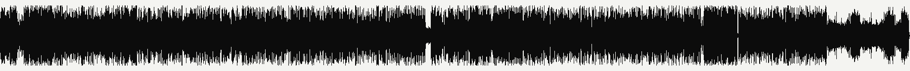
el testimoni · 33
00. la vora del foc
01. un oient
02. el dial global
Josep M. Ganyet
mortensen.cat
sørensen.ai
upf.edu
ub.edu
cavallfort.cat
granollers, 20/11/2026 · 34